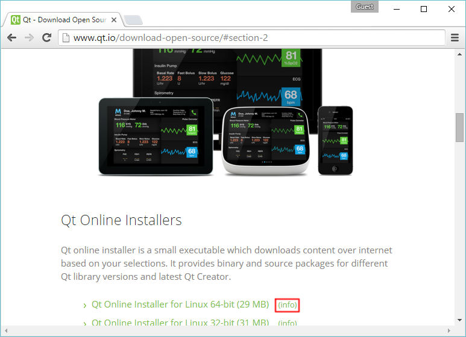
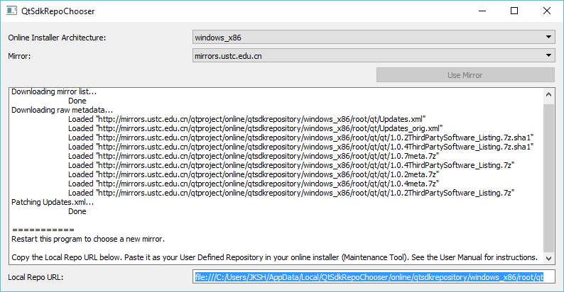
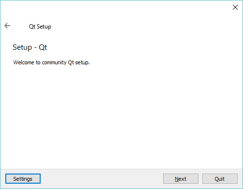
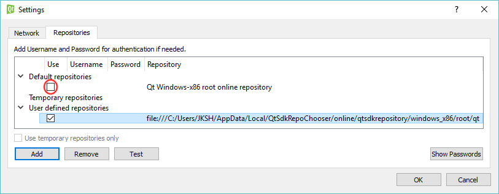
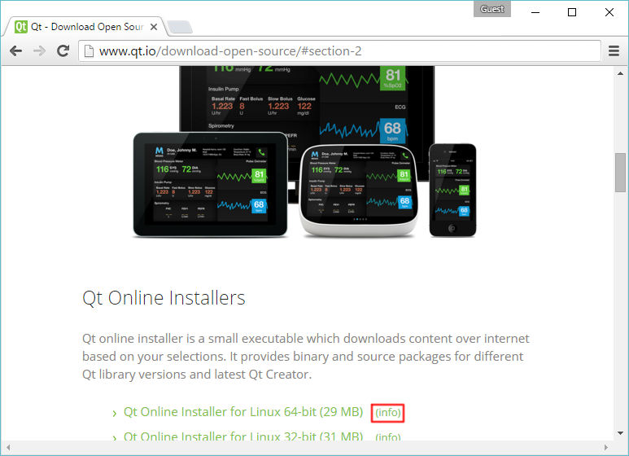
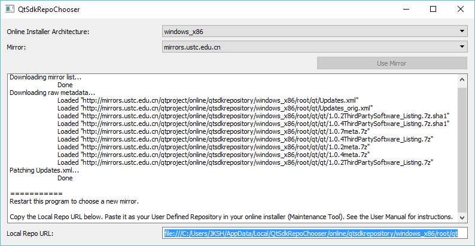
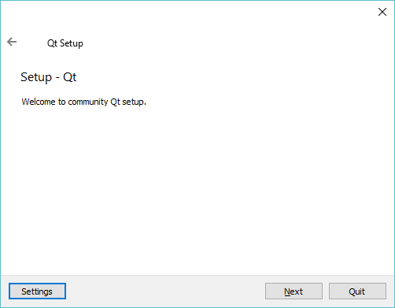
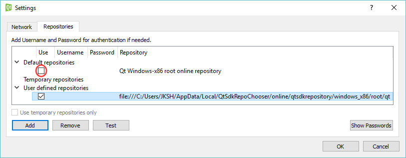

Download and extract the Qt SDK Repo Chooser. Launch the QtSdkRepoChooser executable.



Under the "Repositories" tab, deselect "Qt

If you are using the online Qt 5 SDK but downloads are slow and/or you frequently get disconnected, this tool might help. You might have been assigned a mirror that is performing poorly. The Qt SDK Repo Chooser helps you select a non-default mirror, which might give you a better download experience.
Ideally, the causes of this issue should be solved upstream. Please add your thoughts, ideas, and votes to the reports at QTIFW-5 and QTIFW-441. In the meantime though, I hope this tool is useful for you to get started with Qt.

Download and extract the Qt SDK Repo Chooser. Launch the QtSdkRepoChooser executable.


Under the "Repositories" tab, deselect "Qt

IMPORTANT!: When a new version of Qt is released, you will need to re-run steps #5 and #6 in the Qt SDK Repo Chooser to update your local repo with details of the new packages.
If you can't use this tool for whatever reason, see README.md in the project root folder for an alternative way to choose your repo.